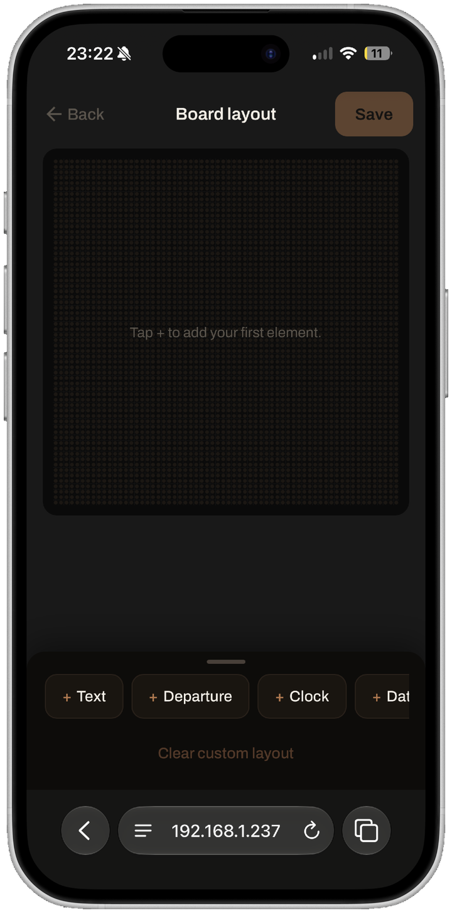
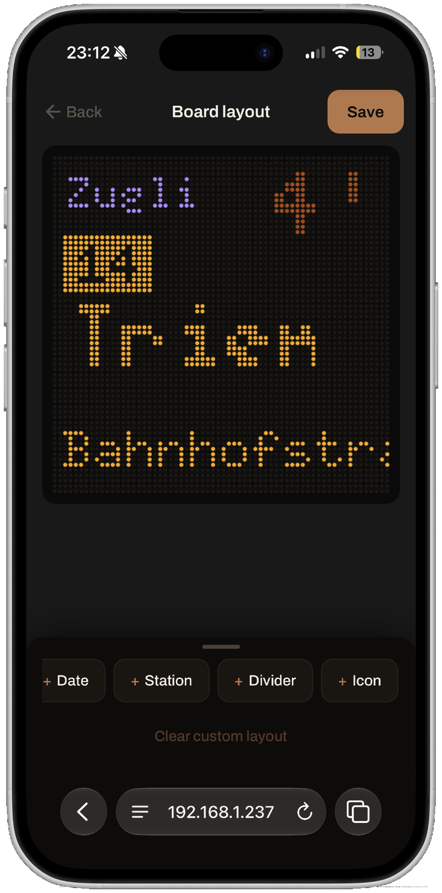
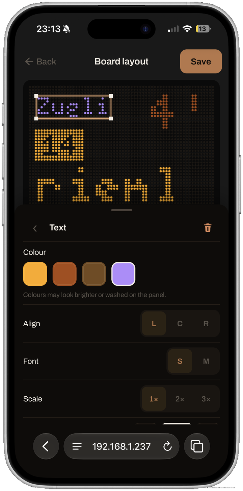
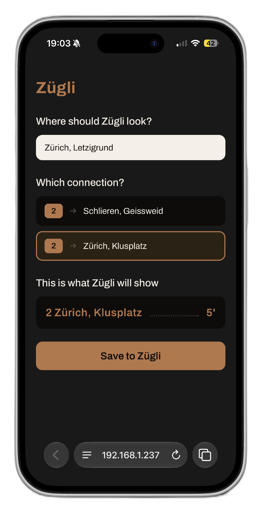
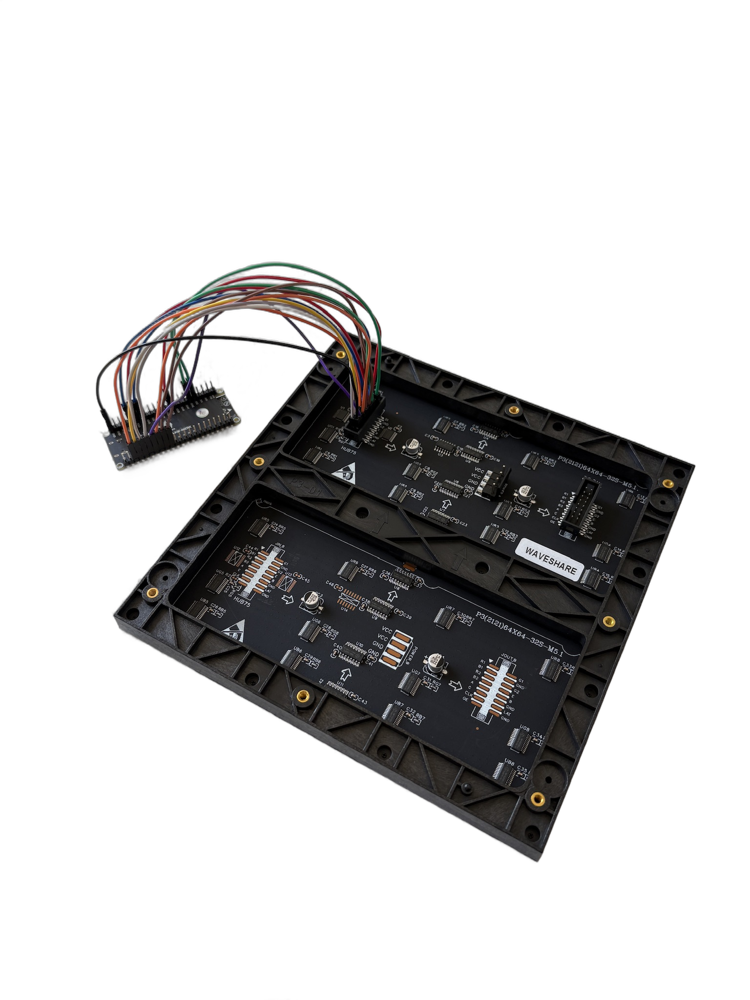

Zügli sits in your home and watches the departures you care about. One line, a few, or your whole stop. It counts them down on a glowing LED panel, so you can see from across the room exactly when to leave. Live Swiss transit data, no app, built by you.
A single 64×64 panel, the same one Zügli lights up on your shelf.
Zügli polls the official transport.opendata.ch API for your stop and keeps the next three departures you're tracking. When one is running late, it counts down to the delayed time, not the timetable. The number glowing on the shelf by your door is the number on the platform.
Two views come built in, shown here rendering the same three departures. These aren't mockups: both panels below draw the exact layout the firmware puts on the real 64×64 matrix, glyph for glyph.
Your stop up top, the next three departures under it: line, destination, and a live countdown. When one hits 0, a little tram rolls up in place of the minutes.
One connection, one big number. The whole panel counts down the departure you actually ride, with the one after it tucked into the footer.
Not sold on the default? Open the visual layout builder right in your browser and lay out the panel exactly how you want it: drag things around, size them, colour them, and watch the real panel keep up as you go.

Tap + to drop in text, a live departure, a clock, the date, an icon or a divider.

Drag every element around the 64×64 grid and resize it by the corners. The preview mirrors the panel live.

Tap any element to set its colour, alignment, font and scale. Hit Save and the board switches over on the spot.
Join the Zügli-Setup hotspot and hand it your home WiFi password. It joins, then reboots onto your network.
Open zugli.local, search your stop, and pick the connections you ride: one, a few, or the whole stop. Hit Save and the panel switches over live.
Set it on a shelf by the door. From now on it counts down your next departures, and you leave at the right minute, every time.
The config page is a plain website served by the board itself, so there's nothing to install and nothing to sign up for. Come back to zugli.local whenever you like to switch stops, change the connections you follow, or set the brightness and let it auto-dim at night. Every change goes live on the panel the moment you hit Save, no reboot needed.

Five off-the-shelf parts. No custom boards and no soldering, just Dupont wires and a screwdriver.
The brain. WiFi, Rust firmware, drives the panel.
The display. A bright copper-on-black LED matrix.
Feeds the panel directly, with headroom for full brightness.
Screw-terminal pigtail from supply to panel lugs.
14 signal lines + ground, ESP32 to panel header.
An ESP32-S3 driving a single 64×64 HUB75 panel, firmware written in
Rust (no_std, Embassy). Every wire, pin and line of code
is published. Build it exactly as documented, or change whatever you like. It's yours.

The Tramli is lovely, and it's also the reason Zügli exists. It felt too expensive for what it does, so I set out to build the same idea for less. Here's how it shakes out.
And you end up knowing exactly how it works, with firmware you can change whenever you want.
All parts bought at Bastelgarage. Your shop and shipping may vary. The savings are in the parts, the rest is your time.
The full brief, wiring guide, firmware and config page are on GitHub. Gather the five parts, wire it up, flash it, and never sprint for the tram again.